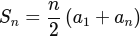
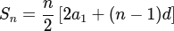
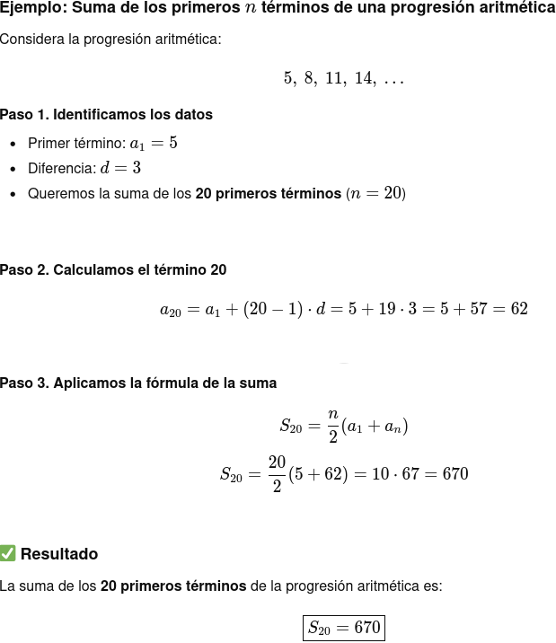
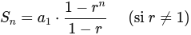
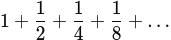
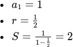
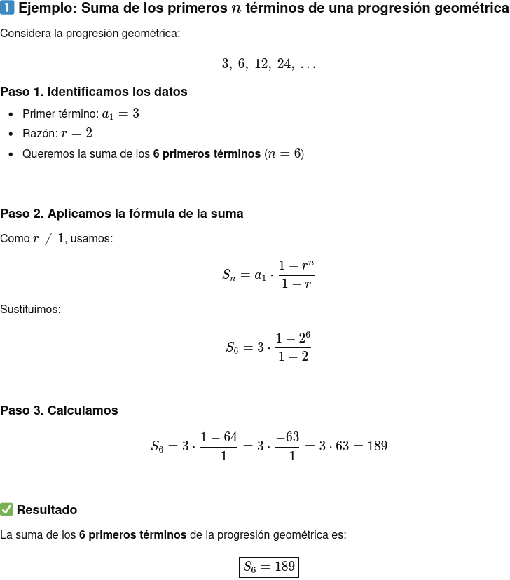
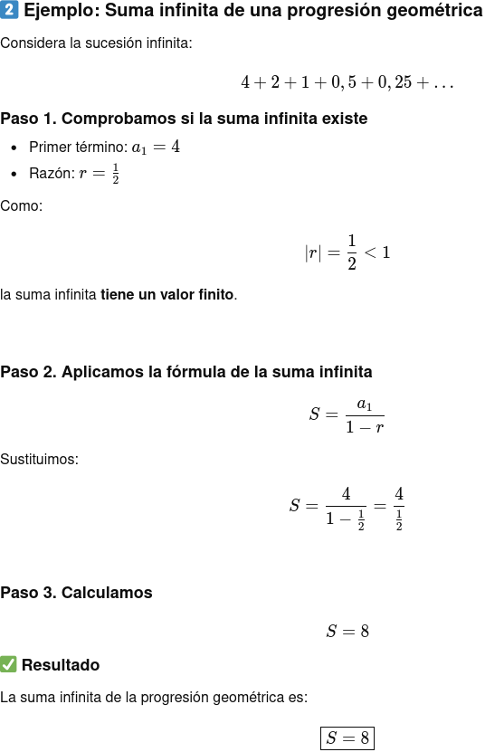

Reconocimiento de patrones en sucesiones
1. ¿Qué es una sucesión?
Una sucesión es una lista ordenada de números que siguen una regla o patrón.
Ejemplos:
- 2, 4, 6, 8,…
- 1, 4, 9, 16,…
- 100, 50, 25, 12'5,…
Cada número de la sucesión se llama término y se suele representar así:
- Primer término: a1
- Segundo término: a2
- Término general: an
2. Cómo reconocer el patrón
Para identificar una sucesión hay que observar cómo se pasa de un término al siguiente:
- Sumando o restando siempre la misma cantidad
- Ejemplo: 3, 7, 11, 15,… → se suma 4
- Multiplicando o dividiendo siempre por el mismo número
- Ejemplo: 2, 6, 18, 54,… → se multiplica por 3
- Patrones más complejos (cuadrados, alternancias, etc.)
- Ejemplo: 1, 4, 9, 16,… → cuadrados de los números naturales
3. Tipos de sucesiones más importantes
En este tema estudiaremos dos tipos fundamentales:
- Progresiones aritméticas
- Progresiones geométricas
No todas las sucesiones numéricas crecen a la misma velocidad, algunas crecen alarmantemente rápido sin darnos cuenta... para reflexionar sobre la "velocidad de crecimiento"... ¡vamos a conocer la leyenda del tablero de ajedrez y los granos de trigo!
Progresiones aritméticas (P.A.)
1. Definición
Una progresión aritmética es una sucesión en la que cada término se obtiene sumando al anterior un mismo número, llamado diferencia d.
- Ejemplo: 2, 5, 8, 11, …
- Aquí:
- a1 = 2
- d = 3
2. Término general de una progresión aritmética
El término general permite calcular cualquier término sin escribir los anteriores.
an = a1 + (n−1)⋅d
Donde:
- an: término en la posición n
- a1: primer término
- d: diferencia
Ejemplo:
- En la sucesión 3,7,11,…:
- an = 3+(n−1)⋅4
3. Suma de los primeros n términos
La suma de los n primeros términos de una progresión aritmética se representa por Sn.

También puede usarse:
Ejemplo:
- Suma de los 10 primeros términos de la sucesión 2,5,8,….

Progresiones geométricas (P.G.)
1. Definición
Una progresión geométrica es una sucesión en la que cada término se obtiene multiplicando el anterior por un mismo número, llamado razón r.
Ejemplo: 3, 6, 12, 24, …
Aquí:
- a1 = 3
- r = 2
2. Término general de una progresión geométrica
El término general se calcula con la fórmula:
an = a1 ⋅ r n−1
Ejemplo:
- Para la sucesión 5,10,20,…:
- an = 5 ⋅ 2 n−1
3. Suma de los primeros n términos
La suma de los n primeros términos de una progresión geométrica es:
Ejemplo:
Suma de los 5 primeros términos de la sucesión 2,4,8,…
4. Suma de una progresión geométrica infinita
En algunas progresiones geométricas la suma no tiene fin, pero puede tener un valor límite.
Esto ocurre cuando:
∣r∣<1
La suma infinita se calcula con:

Ejemplo:

Aquí:


La sucesión de Fibonacci
La sucesión de Fibonacci es una sucesión de números en la que cada término se obtiene sumando los dos anteriores.
Comienza así:
1, 1, 2, 3, 5, 8, 13, 21, …
La regla es:
- a1 = 1
- a2 = 1
- an = an−1 + an−2 para n≥3
Características principales:
- No es una progresión aritmética ni geométrica.
- Aparece en la naturaleza (conchas, girasoles, piñas).
- La relación entre dos términos consecutivos se va acercando a un número especial llamado número áureo (φ ≈ 1,618...).
Ejemplo:
1, 1, 2, 3, 5, …
El término siguiente es:
3+5=8
Idea clave:
En la sucesión de Fibonacci, cada número es la suma de los dos anteriores.
Conexión con el arte: la espiral y la proporción áurea
La espiral que aparece al unir los cuadrados se parece mucho a la espiral áurea, una forma que se ha utilizado en el arte y la arquitectura desde la Antigüedad.
Ejemplos artísticos:
- Leonardo da Vinci: en obras como El Hombre de Vitruvio o La Gioconda, se buscan proporciones equilibradas cercanas al número áureo.
- Arquitectura clásica: templos griegos y fachadas con proporciones armónicas.
- Arte moderno y diseño: logotipos, fotografía y composición visual usan la espiral para guiar la mirada.
{kind=link}
{kind=link}
{kind=link}
{kind=link}
{kind=link}